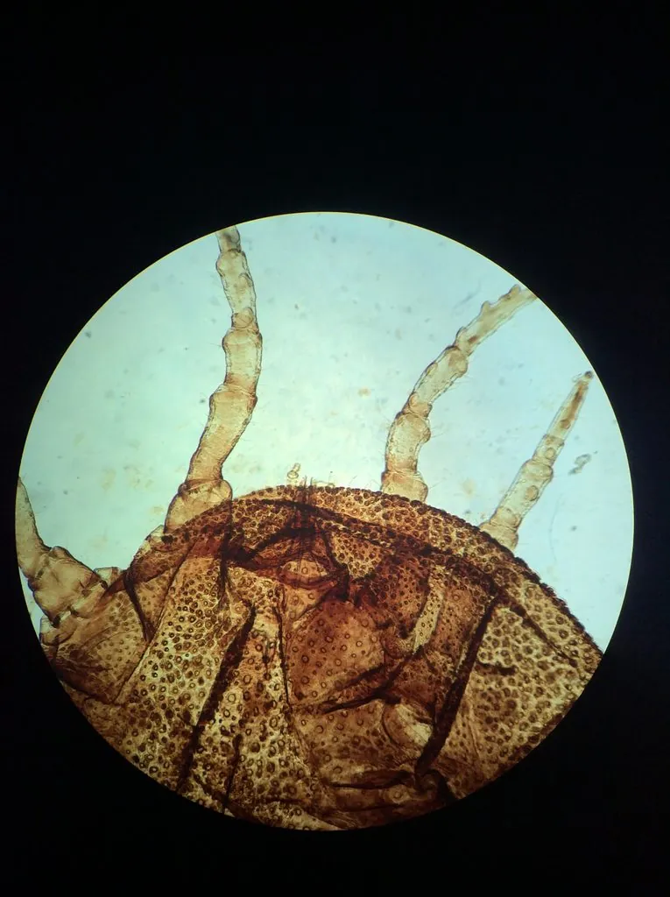

蛛形动物 · 动物界
非洲钝缘蜱 Ornithodoros moubata

非洲撒哈拉以南的软蜱，体表无硬盾板、吸饱血后呈灰蓝色，藏身茅屋墙缝与床铺缝隙，是非洲回归热的重要传播媒介。
- 分类
- 门节肢动物门纲蛛形纲目蜱目科软蜱科属钝缘蜱属
- 栖息环境
- 茅屋墙缝、泥土地面、床铺缝隙、畜舍及野外岩缝与动物洞穴
- 地理分布
- 非洲撒哈拉以南地区，包括东非、中非与南部非洲
- 保护级别
- IUCN 未评估；为重要医学媒介，需重点防制
物种志
非洲钝缘蜱成虫体长约 5–7 毫米，未吸血时扁平呈灰褐至暗褐色，体表布满细密颗粒与小疣，没有硬蜱那样覆盖背部的硬质盾板，因此被称为“软蜱”。吸饱血后身体可膨大到原来的数倍，呈灰蓝或铅灰色，行动迟缓。口器位于体前端腹面，从背面看不到，这是软蜱与硬蜱的直观区别。
它们分布于非洲撒哈拉以南地区，栖息于人类茅屋的墙缝、泥土地面、床铺缝隙与畜舍中，也见于野外的岩缝与动物洞穴。成虫与若虫多在夜间出来吸血，主要寄生于人、猪、鸡等，吸血仅需数十分钟。它是蜱媒回归热（一种由疏螺旋体引起的急性传染病）的主要传播媒介，病原体可经蜱的唾液与基节液传播，也能经卵传给后代。防制以改造住房、填塞墙缝与使用杀虫剂为主。
形态与习性
- 体长未吸血约 5–7 mm，吸饱血后可膨大数倍
- 体表无硬质盾板，密布颗粒与小疣
- 食性吸食人、猪、鸡等温血动物血液
- 活动节律夜间出来吸血，每次吸血仅数十分钟
- 医学意义非洲蜱媒回归热的主要传播媒介
- 繁殖病原体可经卵传给后代，种群难以清除
- 寿命可存活数年，耐饥能力极强
趣味知识
- 软蜱的嘴长在身体腹面，从背上看不见，这是它和硬蜱的最大区别。
- 它专挑夜里出来吸血，几分钟就吃饱缩回墙缝里。
- 它是非洲回归热的头号传播者，病原体还能通过蜱卵传给下一代。